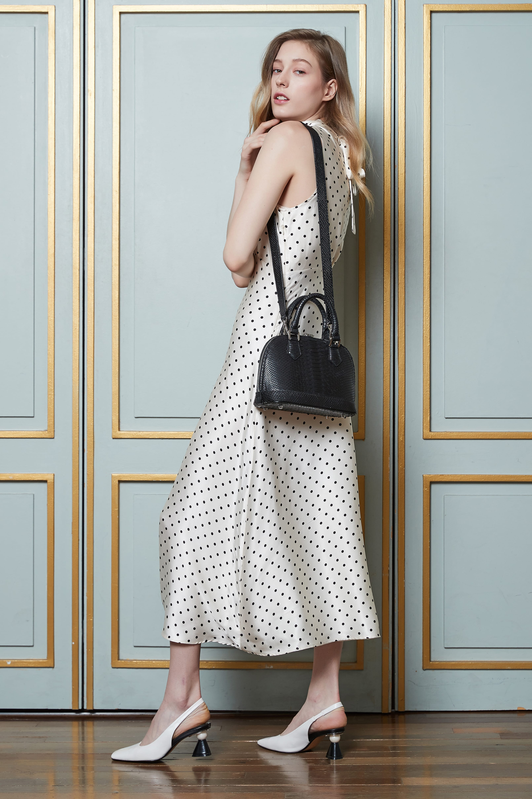

EXOTIC LEATHER
Soft Yet Resilient

THE MATERIAL
오스트리치 가죽은 독특한 퀼 범프(Quill bump) 패턴으로 즉시 알아볼 수 있습니다.
이 점점이 솟아오른 패턴은 타조 깃털이 자랐던 자리이며, 세상에 동일한 패턴은 존재하지 않습니다.
놀랍도록 부드러우면서도 매우 강인한 오스트리치 가죽은 일반 가죽 대비 월등한 내구성을 자랑합니다.
한 마리의 타조 스킨에서 단 몇 점의 핸드백만이 탄생할 수 있어 그 희소성이 가치를 더합니다.
CHARACTERISTICS
자연이 만든 독보적인 텍스처.
오스트리치 가죽이 특별한 이유.
오스트리치 가죽의 트레이드마크인 퀼 범프 패턴. 모든 스킨은 고유하며, 범프의 크기와 위치가 각기 달라 세상에 동일한 제품이 존재하지 않습니다.
최고급 오스트리치 가죽은 촉각적 부드러움이 탁월합니다. 손에 닿는 순간 느껴지는 고급스러운 감촉은 크로커다일과는 또 다른 매력의 럭셔리입니다.
오스트리치 가죽은 동일 두께의 일반 소가죽보다 훨씬 강한 인장 강도를 지닙니다. 아름답고 부드러우면서도 수십 년을 함께할 수 있습니다.
CRAFTSMANSHIP
한 마리의 타조에서 탄생하는 단 몇 점의 핸드백.
그 희소함이 곧 가치입니다.